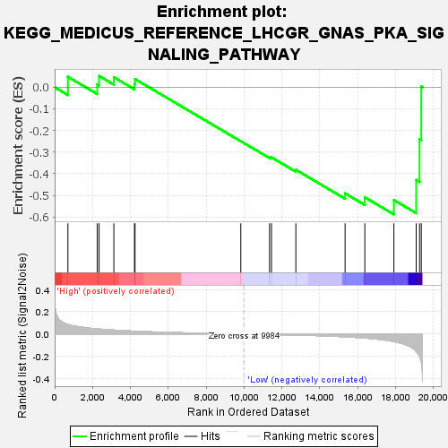
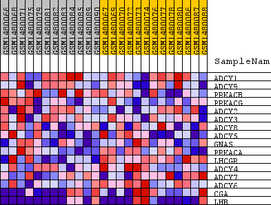
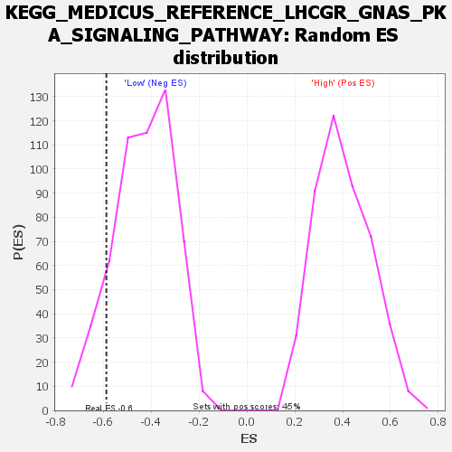

| Dataset | WG6v3.CPT1A.cls#High_versus_Low.CPT1A.cls#High_versus_Low_repos |
| Phenotype | CPT1A.cls#High_versus_Low_repos |
| Upregulated in class | Low |
| GeneSet | KEGG_MEDICUS_REFERENCE_LHCGR_GNAS_PKA_SIGNALING_PATHWAY |
| Enrichment Score (ES) | -0.58798593 |
| Normalized Enrichment Score (NES) | -1.3675703 |
| Nominal p-value | 0.102564104 |
| FDR q-value | 0.6479311 |
| FWER p-Value | 1.0 |

| SYMBOL | TITLE | RANK IN GENE LIST | RANK METRIC SCORE | RUNNING ES | CORE ENRICHMENT | |
|---|---|---|---|---|---|---|
| 1 | ADCY1 | ADCY1 | 700 | 0.085 | 0.0481 | No |
| 2 | ADCY9 | ADCY9 | 2249 | 0.046 | 0.0133 | No |
| 3 | PRKACB | PRKACB | 2346 | 0.044 | 0.0522 | No |
| 4 | PRKACG | PRKACG | 3126 | 0.035 | 0.0463 | No |
| 5 | ADCY2 | ADCY2 | 4216 | 0.025 | 0.0148 | No |
| 6 | ADCY3 | ADCY3 | 4245 | 0.025 | 0.0377 | No |
| 7 | ADCY8 | ADCY8 | 9830 | 0.000 | -0.2496 | No |
| 8 | ADCY5 | ADCY5 | 11348 | -0.004 | -0.3236 | No |
| 9 | GNAS | GNAS | 11450 | -0.005 | -0.3243 | No |
| 10 | PRKACA | PRKACA | 12737 | -0.009 | -0.3817 | No |
| 11 | LHCGR | LHCGR | 15338 | -0.025 | -0.4908 | No |
| 12 | ADCY4 | ADCY4 | 16380 | -0.036 | -0.5090 | No |
| 13 | ADCY7 | ADCY7 | 17914 | -0.067 | -0.5215 | Yes |
| 14 | ADCY6 | ADCY6 | 19092 | -0.155 | -0.4290 | Yes |
| 15 | CGA | CGA | 19268 | -0.200 | -0.2409 | Yes |
| 16 | LHB | LHB | 19361 | -0.252 | 0.0031 | Yes |

